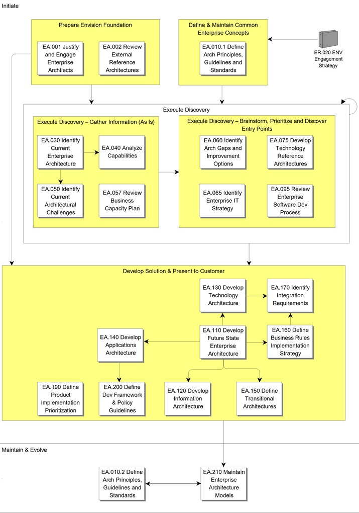
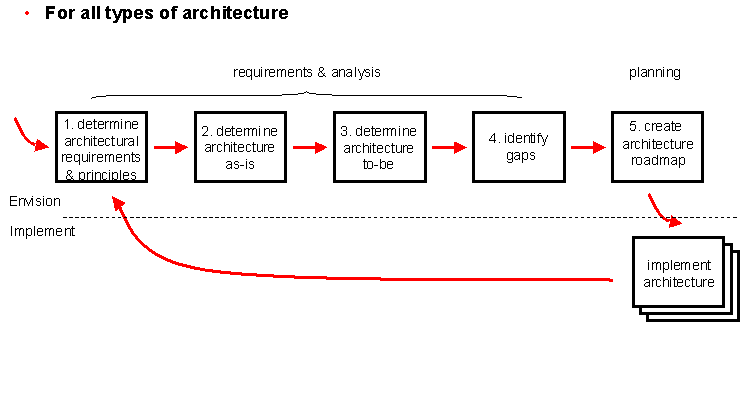
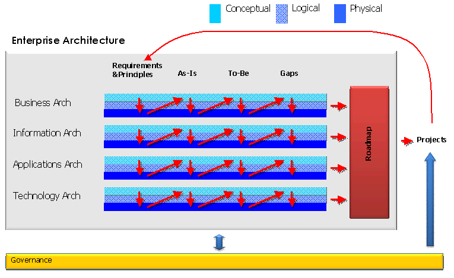

OUM |
Process Overview |
||
Method Navigation |
Current Page Navigation |
||
|
|
||||||||
Enterprise Architecture covers an enterprise-level view on both the application and technical architecture of the systems. The scope of Enterprise Architecture includes aspects like technologies, frameworks, development tools, delivery methods (including standards and guidelines), network, hardware and security. The Enterprise Architecture process also covers archiving, cataloguing and managing the repository of the artifacts of all the other processes of the Oracle Unified Method.
 This process overview is written from the perspective of a Full Method View, utilizing ALL of the activities and tasks in this process. Therefore, all of the following sections provide comprehensive information. If your project is utilizing a tailored approach (for example, Technology Full Lifecycle View, Application Implementation View, Middleware Architecture View), not everything in this overview may be appropriate for your project. Please keep this in mind, especially when reviewing the Key Work Products and Tasks and Work Products sections. You should use OUM as a guideline for performing all types of information technology projects, but keep in mind that every project is different and that you need to adjust project activities according to each situation. Do not hesitate to add, remove, or rearrange tasks, but be sure to reflect these changes in your estimates and risk management planning. You should also consider the depth to which you address and complete each task based on the characteristics of your particular project or project increment. See Oracle's Full Lifecycle Method for Deploying Oracle-Based Business Solutions for further information on the scalability and adaptability of OUM.
This process overview is written from the perspective of a Full Method View, utilizing ALL of the activities and tasks in this process. Therefore, all of the following sections provide comprehensive information. If your project is utilizing a tailored approach (for example, Technology Full Lifecycle View, Application Implementation View, Middleware Architecture View), not everything in this overview may be appropriate for your project. Please keep this in mind, especially when reviewing the Key Work Products and Tasks and Work Products sections. You should use OUM as a guideline for performing all types of information technology projects, but keep in mind that every project is different and that you need to adjust project activities according to each situation. Do not hesitate to add, remove, or rearrange tasks, but be sure to reflect these changes in your estimates and risk management planning. You should also consider the depth to which you address and complete each task based on the characteristics of your particular project or project increment. See Oracle's Full Lifecycle Method for Deploying Oracle-Based Business Solutions for further information on the scalability and adaptability of OUM.
This process flow for this process follows:

High-Level Architecture Approach
Industry practices for Architecture are included in OUM. At a high level all, types of architecture are evaluated using the following high-level approach:

In OUM, there are four main classifications of Architecture type, described as follows:
Business Architecture |
The Business Architecture provides a business reference model used to align a business' operating model, strategies, and objectives with IT; creates a business case for IT transformations, and provides a business-centric view of the enterprise from a functional perspective. |
Information Architecture |
The Information Architecture provides an information/data-centric view of an enterprise/business that focuses on key information assets that are used to support critical business functions and are made accessible via application services for sharing, update and exchange and provides information strategy for governance, privacy and data content/exchange standards, etc. |
Applications Architecture |
The Applications Architecture provides an application and services-centric view of an enterprise/business that ties business functions/services to application processes/services to application components in alignment with the application strategy and provides industry reference architectures mapped to products (apps and tech). |
Technology Architecture |
The Technology Architecture provides a technical reference model used to align technology purchases, infrastructure, and solution implementations with the enterprise's IT strategies, architecture principles, standards, reference architectures, and governance model. |
In principle each of the four types of architecture distinguishes the following levels:
Conceptual |
The main goal of a conceptual architecture is to provide an understandable picture of the architecture. The components of the architecture are described as black-boxes. For each black-box, its responsibility is defined and the relationships between the components are described. |
Logical |
The main goal of the logical architecture is to provide a description of the solution of the architecture. The components of the architecture are detailed as white-boxes. However, the logical architecture does not include organizational unit names, application names, server names, etc. |
Physical |
The main goal of the physical architecture is to identify the specific business units, technologies, applications, servers, networks, etc., which need to be used or created to support the architecture. |

The tasks and work products for this process are as follows:
| ID | Task | Work Product |
|---|---|---|
Initiate Phase |
||
EA.001 |
Justify and Engage Enterprise Architects | Assigned Enterprise Architect |
EA.002 |
Review External Reference Architectures | External Reference Architectures Review |
EA.010.1 |
Review Architecture Principles, Guidelines and Standards | Architecture Principles, Guidelines and Standards |
EA.030 |
Identify Current Enterprise Architecture | Current Enterprise Architecture |
EA.040 |
Analyze Capabilities | Capability Analysis Results |
EA.050 |
Identify Current Architectural Challenges | Current Architectural Challenges |
EA.057 |
Review Business Capacity Plan | Business Capacity Plan |
EA.060 |
Identify Architectural Gaps and Improvement Options | Architectural Gaps and Improvement Options |
EA.065 |
Identify Enterprise IT Strategy | Enterprise IT Strategy |
EA.075 |
Develop Technology Reference Architectures | Technology Reference Architectures |
EA.095 |
Review Enterprise Software Development Process | Enterprise Software Development Process |
EA.110 |
Develop Future State Enterprise Architecture | Future State Enterprise Architecture |
EA.120 |
Develop Information Architecture | Information Architecture |
EA.130 |
Develop Technology Architecture | Technology Architecture |
EA.140 |
Develop Applications Architecture | Applications Architecture |
EA.150 |
Define Transitional Architectures | Transitional Architectures |
EA.160 |
Define Business Rules Implementation Strategy | Business Rules Implementation Strategy |
EA.170 |
Identify Integration Requirements | Integration Requirements |
EA.190 |
Define Product Implementation Prioritization | Product Implementation Prioritization Report |
EA.200 |
Determine Development Framework and Policy Guidelines | Development Framework |
Maintain and Evolve Phase |
||
EA.010.2 |
Review Architecture Principles, Guidelines and Standards | Architecture Principles, Guidelines and Standards |
EA.210 |
Maintain Enterprise Architectural Models | Maintained Enterprise Architectural Models |
This section is not yet available.
This section is not yet available.
This section is not yet available.
This section is not yet available.

Copyright © 2006, 2016, Oracle and/or its affiliates. All rights reserved.